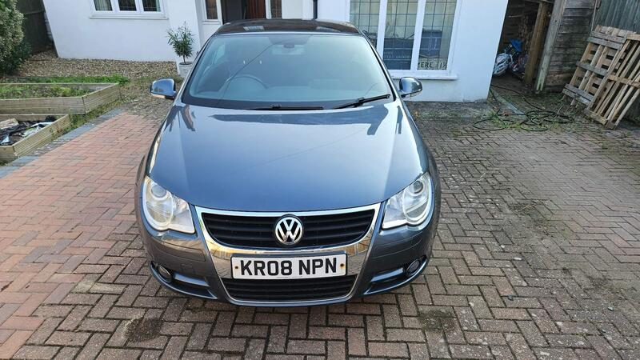
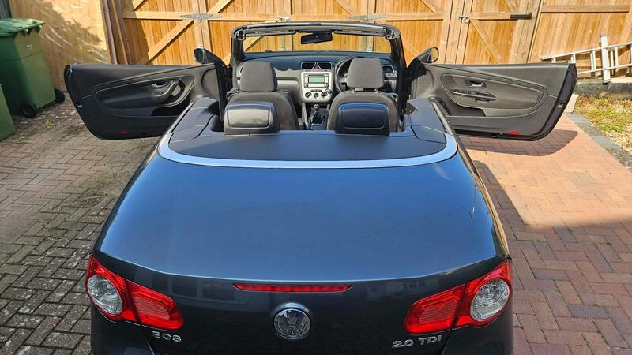
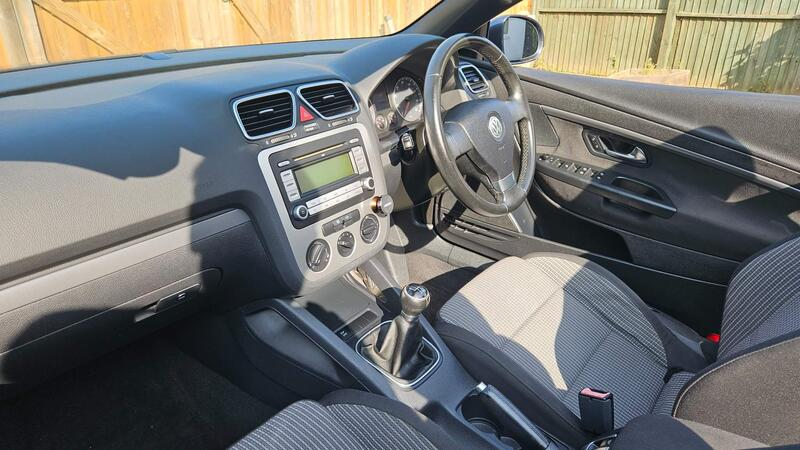
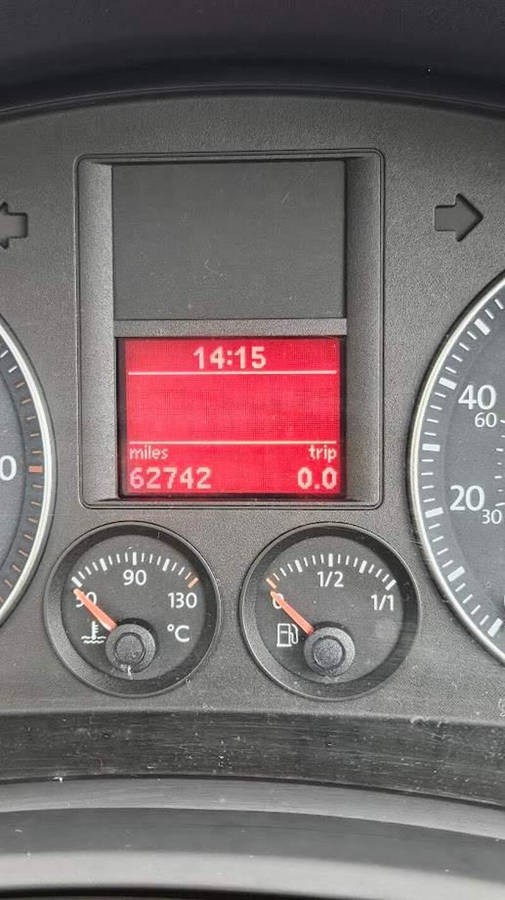

Seller photos from the AutoTrader ad.
VW Eos 2.0 TDI
Close and cheap, but a long-listed ad. Check it carefully.
Key facts
| Price | £2,200 |
|---|---|
| Year | 2008 |
| Miles | 62,742 |
| Model | VW Eos 2.0 TDI |
| Colour | Grey |
| Registration | 2008 (08 reg) |
| Owners | 2 owners |
| Service history | Not stated |
| MOT (AutoTrader ad) | Expired 30 Jul 2025 (ad) |
| Seller | Private |
| Location | Surbiton |
| From GU7 | 19 mi (AutoTrader) |
| Checked | 15 October 2026 |
Why buy it
- Same lady owner for 10 years, low mileage, 'zero issues with roof' (ad)
- Only 19 mi away
Things to check
The ad has been listed since around March 2025, so ask why it hasn't sold
Door-card vinyl lifting (ad); check the roof pump area for water
- VW Eos weak spots
Body generally sound; the hidden risk is water pooling at the roof pump next to the spare wheel and corroding it. Roof leaks into boot/footwells (early cars worst), jammed roof mechanism, electrical gremlins; a crash-damaged roof can cost a fortune.
Seller says (extract)
“Lady-owned for past 10 years, but really low milage as has been a backup/sunny day car for the last 6 years - yet still fully serviced and kept super healthy. Drives absolutely perfectly, zero issues with roof, engine, mechanics etc. A couple of minor blemishes on exterior, but less than you would expect of this age. Vinyl on door cards lifting slightly (see pic). Reason for sale: sadly surplus to requirements now - need the additional space on the driveway!…”